第11天：符号表之函数管理
第11天：符号表之函数管理
解析函数参数
上一节说过，调用 new_var 的地方有 2 处，一个是 var_init 函数，一个是 para_item 函数。
para_item 的源头是 para_decl；para_decl 里面会解析函数的参数列表。代码如下：
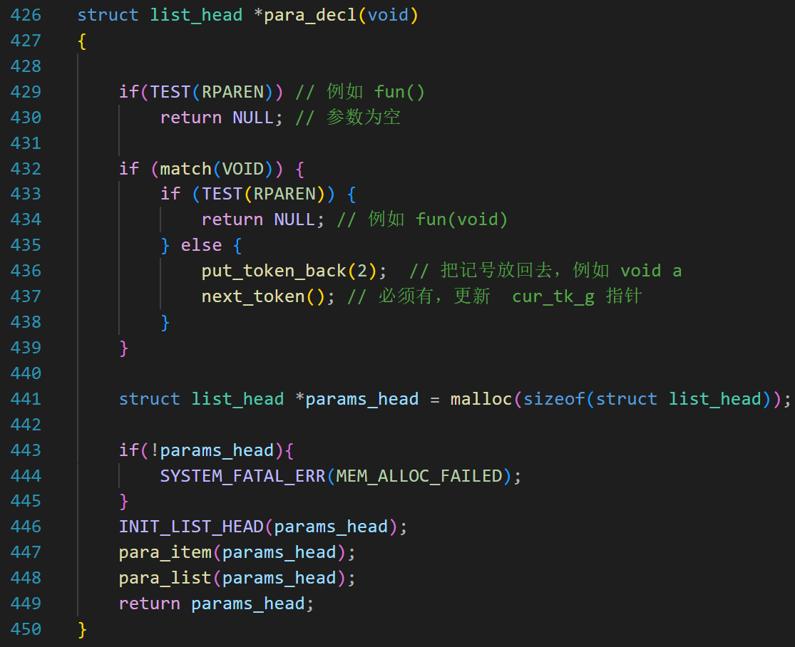
如果执行到第 441 行，说明函数的参数列表不为空，先创建一个链表的头节点。
第 446 行做头节点的初始化。
然后调用 447，把头节点的地址作为参数传给 para_item，para_item 里面会收集函数的形式参数，并加入 params_head 这个链表。
解析完所有形式参数后，返回 params_head；
para_item 的代码如下：
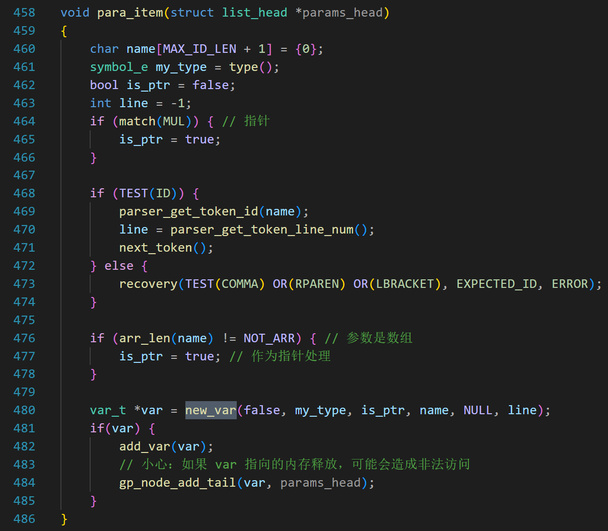
第 469 行，获得参数的名字；第 470 行，获取参数名字所在的行号，这是为了报错用（可能会用到）。
第 476 行，如果是 int foo(int a[...]) 这种写法，我们就把参数当成 int *a
第 480 行，调用 new_var;这个函数上节课介绍了，它的原型是：
var_t *new_var(bool is_ext, symbol_e type, bool is_ptr,const char *name, var_t *init, int line)
第一个参数给的是 false, 这是因为函数参数里面不能有 extern;
倒数第二个参数是 NULL，这是因为 csub 不支持默认参数。
第 482 行，把 var 加入变量表。
第 484 行，把 var 加入链表。
para_decl 函数收集好参数后，会把头节点返回给 fun_decl_tail 的第 411 行
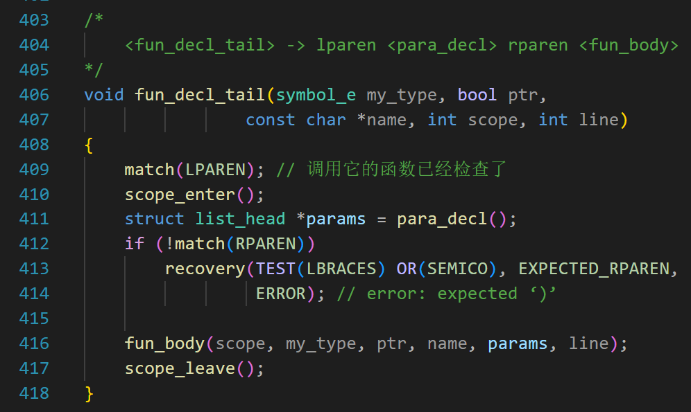
fun_body
现在重点看第 416 的 fun_body 函数。
做语法分析的时候，这个函数的代码如下：
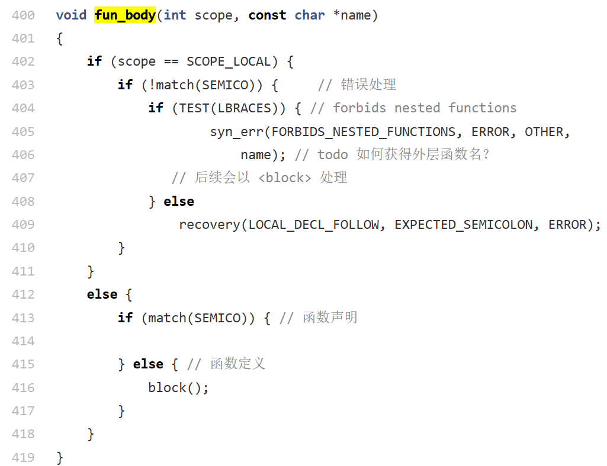
现在它的代码如下。基本框架没有变，但是加入了很多东西。
后面不再贴图对比现在的代码和之前的代码了，有心的同学可以打开以前的代码和现在的代码做对比，体会语义分析到底增加了什么。
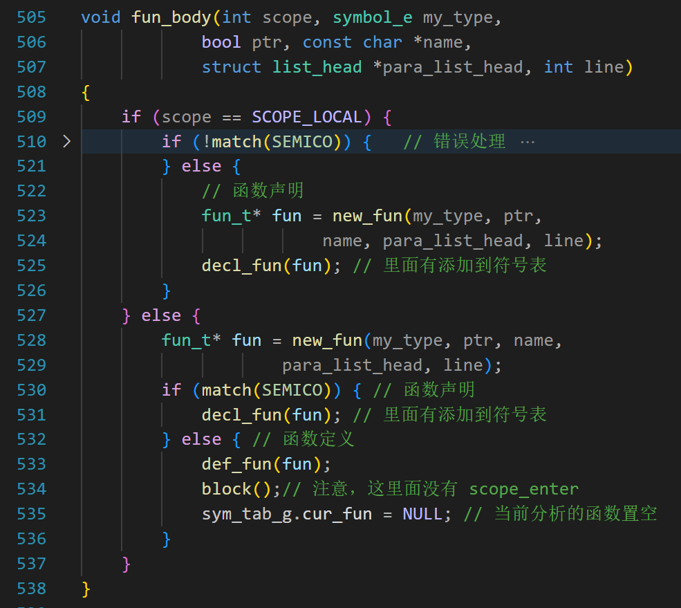
第 509 行，如果 if (scope == SCOPE_LOCAL) 成立，说明是局部作用域，那么只能是函数声明。
第 523 行创建函数符号，第 525 调用 decl_fun() 把函数符号以声明的身份加入函数表。
如果是全局作用域，执行第 528 行，创建函数符号；然后又分成两种情况，声明就调用 decl_fun()，定义就调用 def_fun()
第 535 行，cur_fun 是符号表里面的一个指针（fun_t * 类型），当语义分析分析到函数定义的时候，就让它指向当前正在分析的函数。
fun_t
我们先看看 fun_t 类型
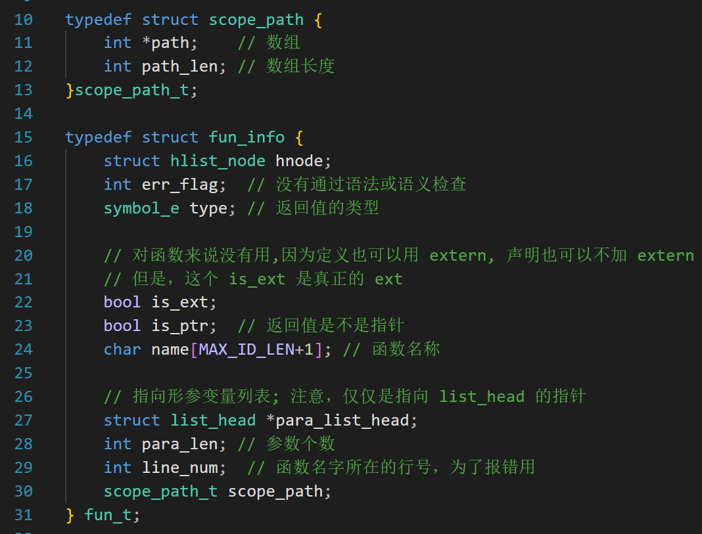
第 16 行，用来加入哈希表的哈希表节点。
第 22 行，is_ext 这个字段用来指示是函数定义还是函数声明，声明的话为 ture；
注意，不是说函数名字前面有 extern 就是声明；
函数定义前面加 extern 不算错误；函数声明前面没有 extern 也不算错误。
真正区分声明和定义的方法是看参数列表末尾，如果是分号就是声明，如果是左大括号就是定义。
因为我不想再定义一个什么字段来表示一个函数符号是声明还是定义，所以就借用了 is_ext 这个字段。
第 27 行，前面说的 para_decl() 收集完函数参数后，头节点最终要给到这个 para_list_head；如果 para_list_head 值为空，则说明参数列表是空；
第 30 行，函数定义或者声明所在的作用域，如果是函数定义，作用域是 0
创建函数符号
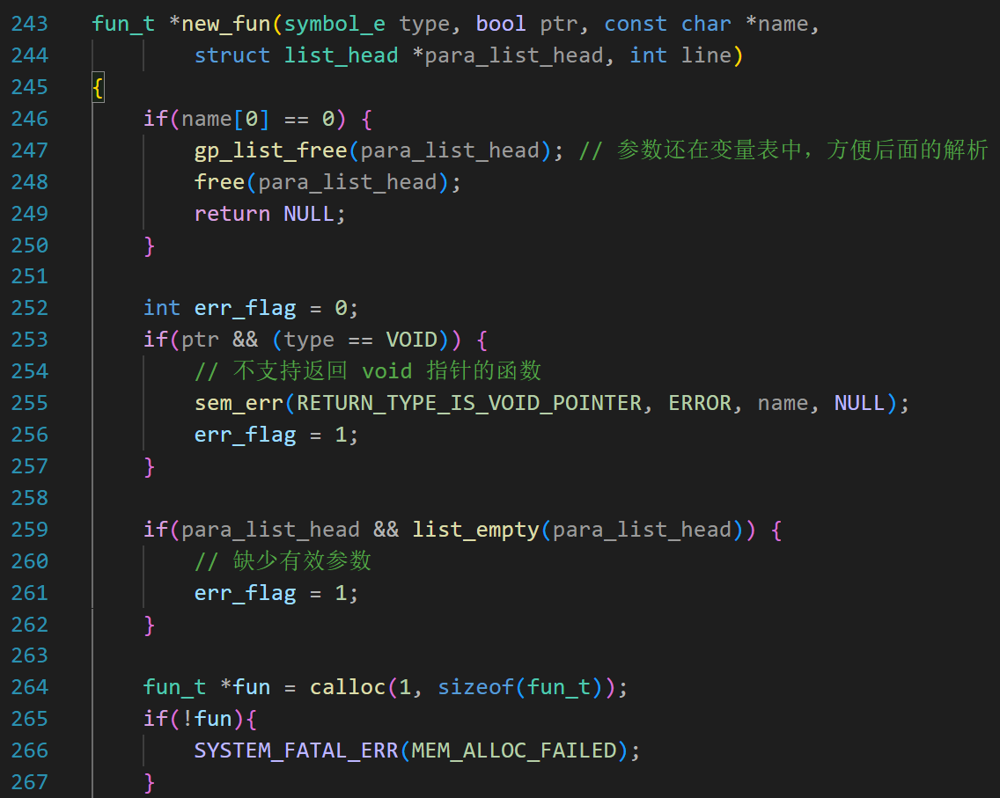
第 246 行，如果遗漏了函数名字，就释放参数链表，释放头节点，返回 NULL；
但是 para_item 函数已经把参数都加到变量表了，这里选择保留这些变量，考虑到后面解析的时候还要用，否则会报告错误，说变量未定义。
第 259 行，如果没有收集到有效的参数，肯定是语法有错误，也要标记 err_flag 为1
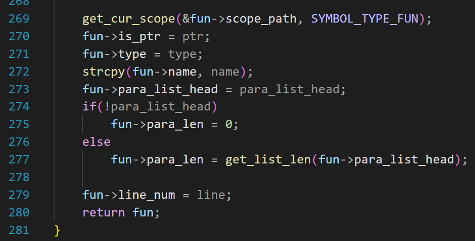
第 269 行，获得作用域。
第 277 行，统计参数的个数。
有同学会问，如果没有收集到有效的参数，fun->para_len 为 0；如果参数列表是 void，fun->para_len 也为 0；如何区分呢？
因为前者标记 err_flag 为1了，在后面的查找中会跳过这些有错误的函数符号，所以不会有问题。
decl_fun
下面该介绍 decl_fun 函数了，它的作用是把函数声明加入函数表。
这里的声明就是狭义声明，不包括函数定义。
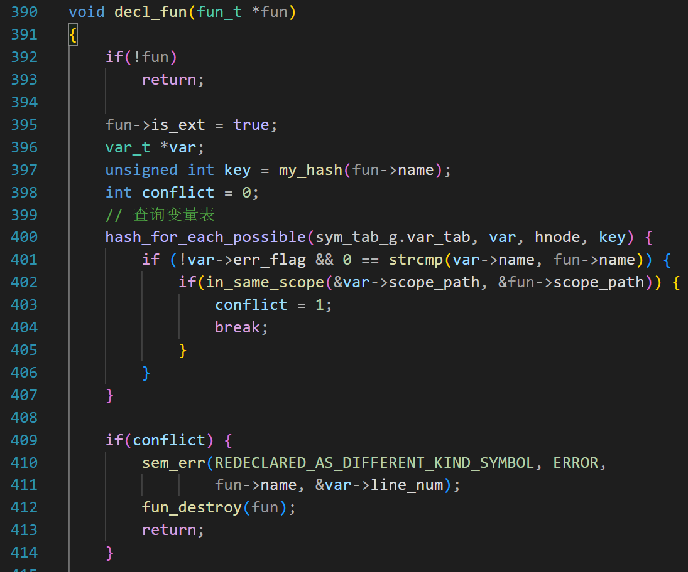
第 395 行，设置 is_ext 为 true；表示这是一个声明。
然后，我们要在变量表里面查一遍，看看有没有作用域相同的同名变量。其中的原因在上一节说过了。
第 401 行，！var->err_flag的意思式跳过语法分析或语义分析有错误的变量
0 == strcmp(var->name, fun->name)是对比函数的名字和变量的名字。
如果 401 为真，则比较它们的作用域，也就是第 402 行，
1 | |
因为每个作用域的路径是唯一的，不存在这样的情况：
比如一个作用域，能表示成“0/1/6”，又能表示成“0/2/6”，还能表示成“0/3/5/6”
因为每个大括号相邻的外层要么只有一个大括号，要么就是文件作用域；所以作用域相同，说明数组完全一样。
比较的时候，仅需要比较数组长度，如果数组长度相同，再看最后一个元素是否相同。
例如，一个作用域是 a/b/3，另一个作用域是 c/d/3
这两个作用域肯定相同，因为 3 相邻的外层括号是确定的，所以 b 等于 d, 同理， a 等于c
这就是上面代码的意思。
再回到上面的代码，如果发现名字一样且作用域一样的变量，就 break，然后报错 “xxx 作为不同的类型重声明”
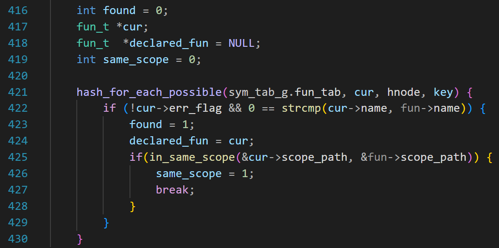
下面该查找函数表了，依然是找同一个名字的函数，另外还要比较作用域；
当跳出循环的时候，有没有同名的函数，用 found 指示；
有没有作用域一样的同名函数，用 same_scope 指示。
并且，declared_fun 这个变量指示某个名字相同的函数，当 same_scope 为 1 的时候， declared_fun 指示第一个遇到的同名且同作用域的函数符号。
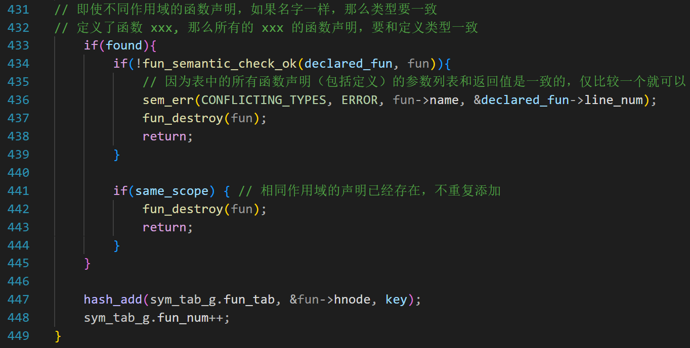
当 found 为 1，说明有同名的函数符号，那么先要检查类型
为了简化表达，这里的类型一致指函数返回值类型一样，参数列表的个数、类型也一样。
如果定义了函数 xxx, 那么所有的 xxx 的函数声明，要和定义类型一致
如果没有定义函数 xxx, 那么所有的 xxx 的函数声明（即使不同作用域），要类型一致
所以，和 declared_fun 比较就可以了，因为能加入函数表的同名符号，其类型肯定一样，随便找一个比较就行。
fun_semantic_check_ok 这个函数就不贴图了，里面的逻辑很好理解，先比较返回类型，再看参数个数，再比较每个参数的类型。
如果连检查都没有通过，对不起，报错，并销毁内存，返回。
如果通过了检查，第 441 行要判断是不是存在同名且同作用域的函数符号，如果是，销毁内存并返回。
需要注意，如果已经存在函数定义了，那么全局作用域的声明就不添加了。
def_fun
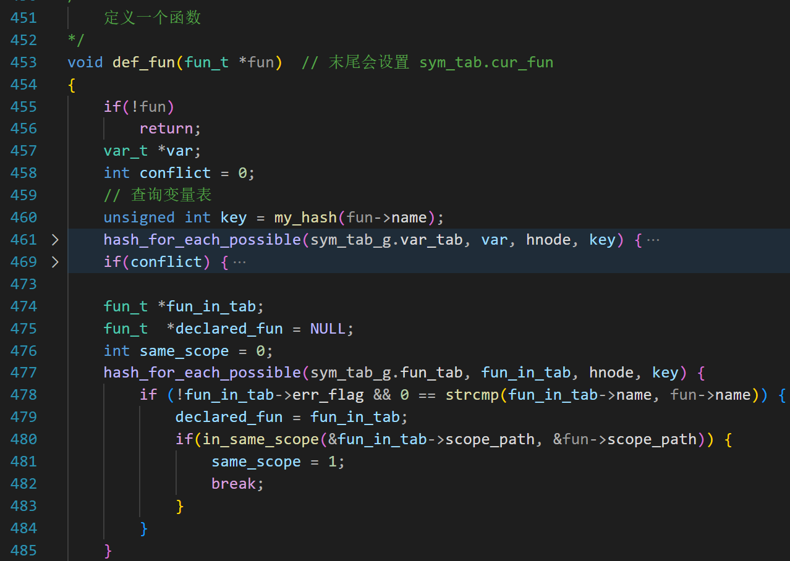
折叠起来的代码是查询变量表，和前文同理。
第 477 到 485 也和前面的代码类似，不再解释。
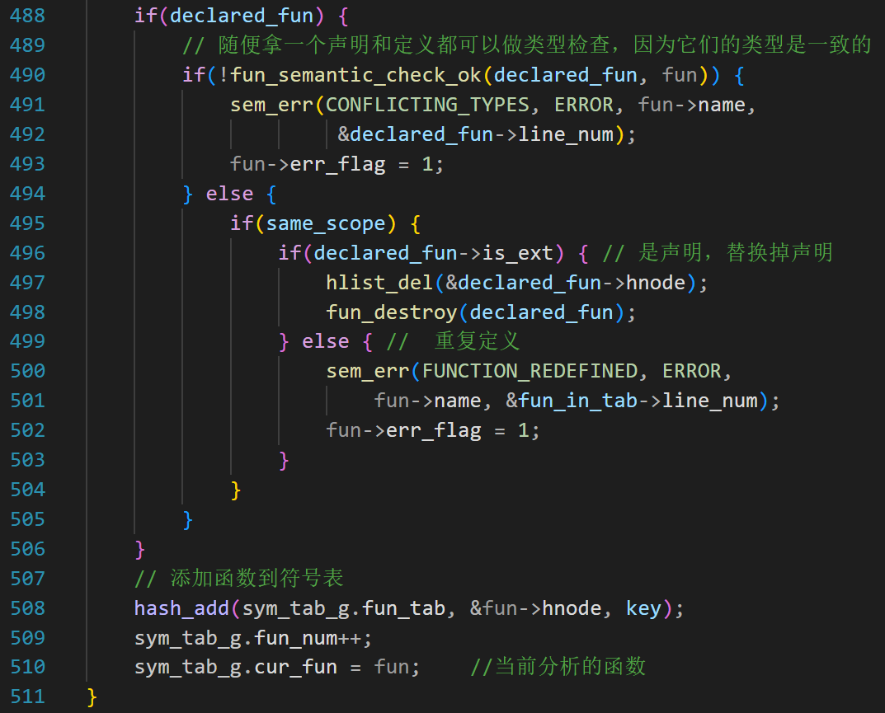
首先，还是类型检查，这个和前文一样。但是类型不一致要标记 err_flag 为1
如果类型检查通过了，就看看是不是存在同名且同作用域的函数符号；如果存在，还分 2 种情况，声明和定义。、
如果是声明（这肯定是一个全局的声明），替换掉声明。因为我的设计是同一个作用域，不允许现 2个名字一样的符号。
如果是定义，就报错：函数重复定义。并且标记 err_flag 为1
最后，把这个函数定义加入函数表，也是想后面解析代码不要报太多的语义错误。
第 510 行，让符号表的 cur_fun 指向这个函数符号。虽然现在看不出 cur_fun 有什么作用，后面就知道了。
我们趁热打铁。
啃下 decl_var 和 def_var
decl_var
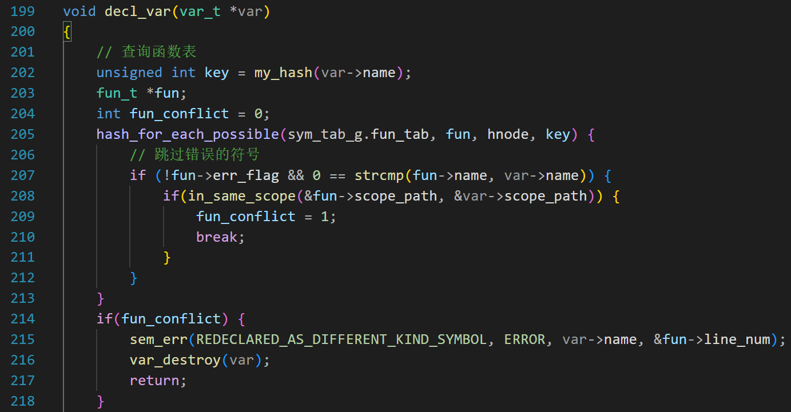
decl_var 用来把变量的声明（不是定义）加入变量表。
老规矩，先扫一下函数表，看看相同作用域有没有同名的函数符号。如果有，就报错，释放内存，返回。
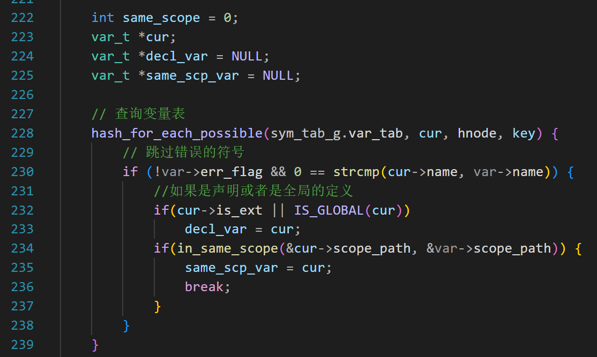
先看第 232 的宏 IS_GLOBAL(x)
它的定义是 #define IS_GLOBAL(x) (x->scope_path.path_len == 1)
因为全局变量的作用域是 0，数组长度是 1，所以用x->scope_path.path_len == 1来判断是不是全局变量。
顺便也说一下局部变量的判断
#define IS_LOCAL(x) (x->scope_path.path_len > 1)
第 230 行，查找变量表中同名的符号，如果它是声明或者是全局变量的定义，就把它的地址记录在 decl_var 中。
满足条件的符号可能不止一个，我们记录其中任何一个就行。
第 234 行，查看是否有作用域相同的符号，一旦发现，记录下这个符号的地址，保存在 same_scp_var 中。
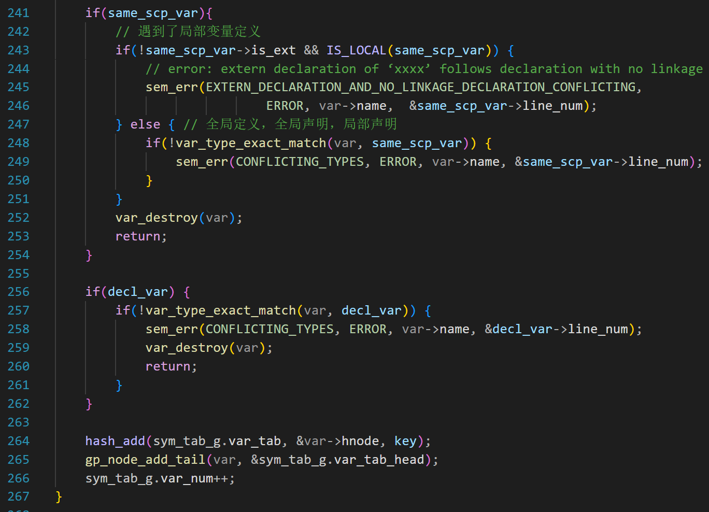
如果第 241 行成立，所有确实有同一个作用域的同名符号。我们分析一下这个符号的类型，逃不过以下 4 种：
-
全局的定义
-
局部的定义
-
全局的声明
-
局部的声明
如果是局部的定义，就要报错，例如
1 | |
这样写是不对的。
上面的代码 243~247 就是解决这种情况。
如果不是这种情况，那就是其他三种了。此时需要检查类型。例如
1 | |
要是类型不一致，也要报错。
这四种情况，都不需要把声明加入变量表，即使通过类型检查，因为同一个作用域已经有同名的符号了，不重复添加。
第 256 行，如果 decl_var 不是 NULL，说明已经存在相同名字的声明或者是全局变量的定义，而且和要加入的符号不在同一个作用域，
这时候也要做类型检查，要是类型冲突，就报错，是否内存，返回。
要是类型检查通过，则执行 264~266，把当前的符号加入变量表。
有人问要是 decl_var 为 NULL 呢？要是能执行到第 256 行且 decl_var 为 NULL，那说明找不到同名的声明，也找不到同名的全局变量的定义，这都不需要类型检查，而且这个要加入的声明还没有作用域冲突的问题，那就直接添加到变量表。
def_var
此函数的作用是把一个变量的定义加入变量表。
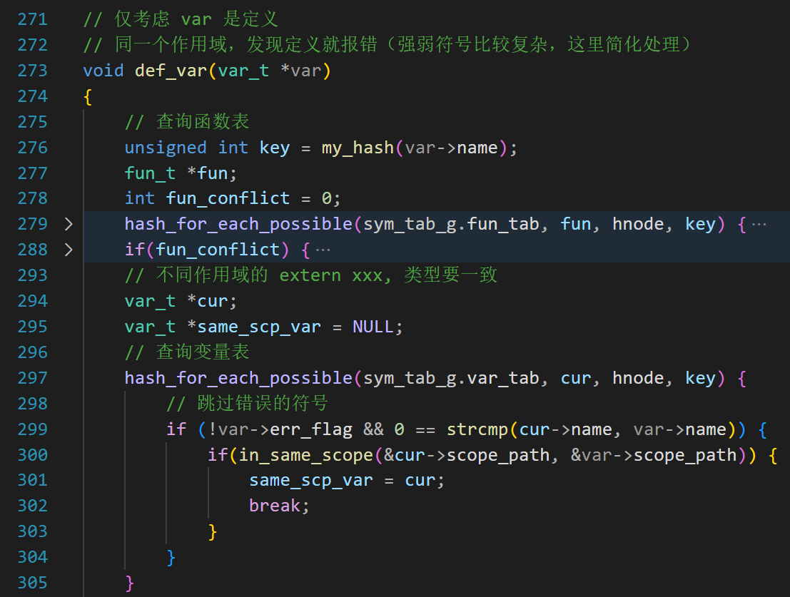
扫描函数表检测冲突的代码已经折叠。
第 300 行，遇到同名的符号且在一个作用域的，记录下此符号的地址，然后 break
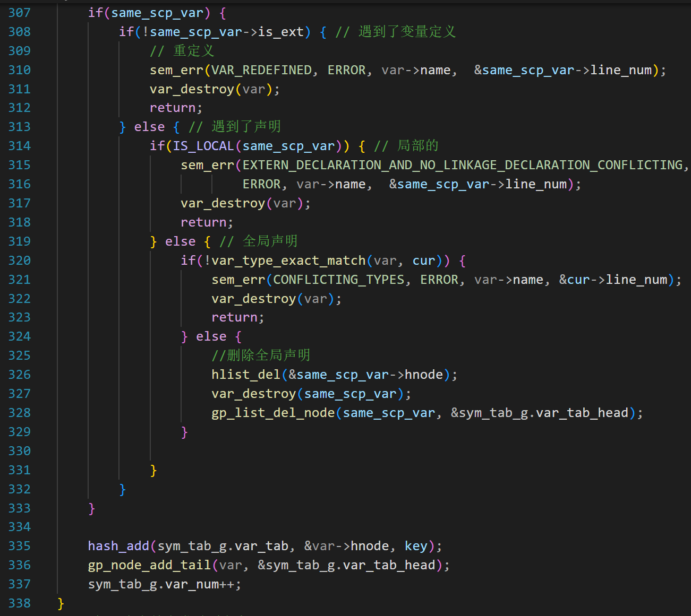
如果 307 行为真，还是那 4 种情况
-
全局的定义
-
局部的定义
-
全局的声明
-
局部的声明
不管是全局的定义还是局部的定义，都不能重复定义，这就是 308~312，报错，释放空间，返回。
接下来就剩声明了。如果是局部作用域里面的声明，和前文一样，报错，释放空间，返回。
如果是全局的声明，要检查类型，类型不一致，报错，释放空间，返回。要是通过了检查，先删除旧的声明，再把新的符号加入变量表（335~337）
这样做是为了保证全局作用域不会出现 2 个同名的符号。
刚才翻过了四座大山。后面还有三座小山。
查找符号
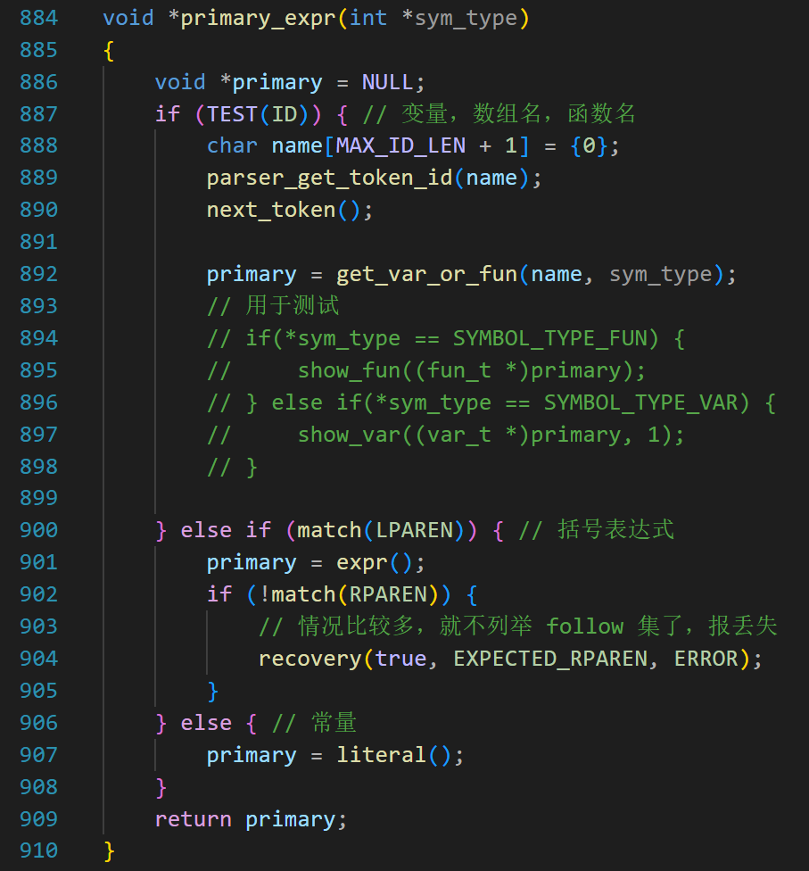
上节课已经展示过这个代码了，现在我们要研究一下第 892 行的
void *get_var_or_fun(const char *name, int *symbol_type)
但是，讲这个函数之前，先要看看 get_var
这个函数的目的是根据符号的名字，去变量表中查找变量。如果有多个同名变量，就遵循就近原则，找到离当前作用域最近的那个变量。
1 | |
请问遇到第 9 行的 a++, 请问这个 a 是哪个 a?
方法不难，首先，看看 a++ 所在的作用域是什么？
是 0/1/2/3
然后，扫描符号表，找到所有的 a,把它的作用域列出来：
第 1 行的 a: 0
第 4 行的 a: 0/1
第 6 行的 a: 0/1/2
第 13 行的 a: 0/1/2/4
然后判断哪个是 0/1/2/3 的最长的前缀
第 1、4、6 都是 0/1/2/3 的前缀，最长的是 第 6 行的 a: 0/1/2
所以， a++ 就是指第 6 行定义的那个 a
前缀有什么规律呢？
前文分析过，一个作用域是 a/b/3，另一个作用域是 c/d/3
那么这两个作用域肯定相同；
所以，如果看 a/b/c 是不是 x/y/z/w 的前缀
先找出长度比较小的（长度一样的话随便挑一个），然后看它的最后一个数字和另一个对应位置上的数字是否相同
也就是看 c 是否等于 z;
如果相等，那么 b 肯定等于 y, a 肯定等于 x
把上面的步骤翻译成代码，就是下面的函数：
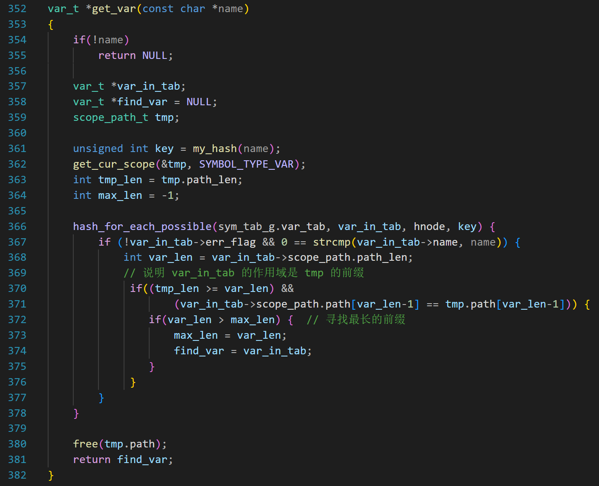
第 362 行，获取当前的作用域。这个函数前面讲过。
第 366 遍历遍历表，第 367 查找同名的变量。
第 370 ~ 371 用来判断是不是前缀
第 372 ~ 375 用来找最长的前缀。
最后，返回找到的变量（也可能找不到）
get_fun 函数和上面的基本一样，就不解释了。
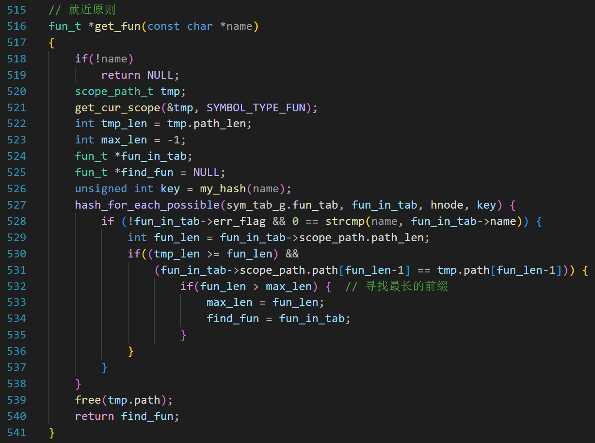
现在看看 get_var_or_fun
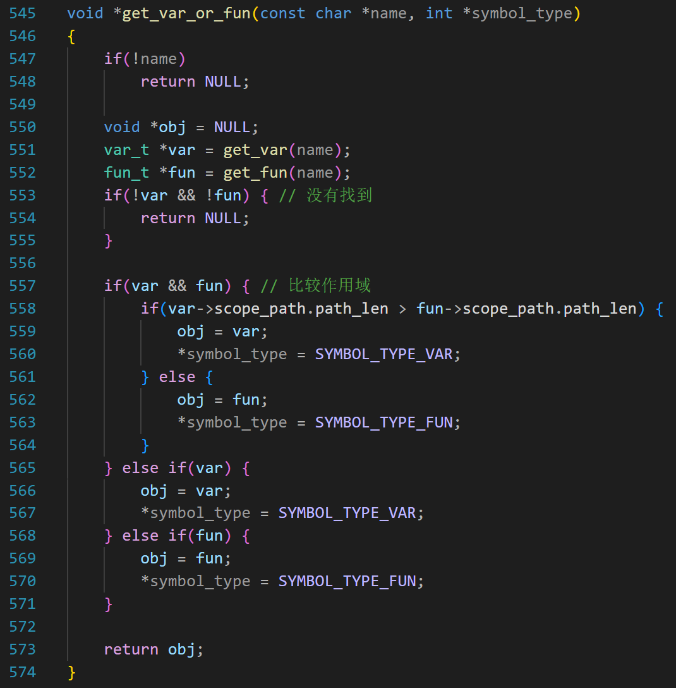
第 551~552，分别去变量表和函数表查一下，如果都返回 NULL，对不起，找不到。
如果都能找到，那还要 PK 一下作用域，长度大的是更近的作用域，见 558~564；
有人问会不会作用域一样长？不会！
因为作用域一样长且都是当前作用域的前缀，那就是同一个作用域，同一个作用域不可能有 2 个同名的符号。
第 565 ~ 568 解决一个表找到了，另一个找不到的问题。（绝大多数都是这种情况，基本上没有人把函数的名字和变量的名字搞成一样的，除非想写出令人无法维护的代码，哈哈哈）
对了，这个函数有个输出型参数，所谓输出型参数（Output Parameter）是指函数中用于将计算结果传递到外部的参数。
这里的 symbol_type 就是输出型参数，调用者传入一个指针（本质就是一个地址），被调用的函数负责往这个地址写入合适的值，这样信息就传给调用者了。
1 | |
symbol_type 这个指针用来接收符号的类型，要么是变量，要么是函数。仅在找到符号的时候才有效。
不过这个函数还不是最终版本，后面会根据需要再修改这个函数。由此可见，写代码也不是一蹴而就的，修修补补是常有的事情。
本文到这里就结束了。
作用域管理、符号表管理基本说完了，也穿插讲了语义分析。
接下来会讲中间代码生成，这里面也会穿插语义分析。
符号表，语义分析，中间代码生成，这三个兄弟是分不开了。
成果展示
测试 1：
1 | |
第 1 行，定义了变量 bar
第 2 行又声明了函数类型的 bar，不可以；
第 3 行同理。
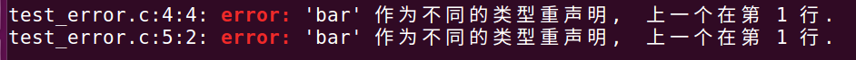
测试 2：
测试函数参数的收集；
测试函数声明的作用域；
1 | |
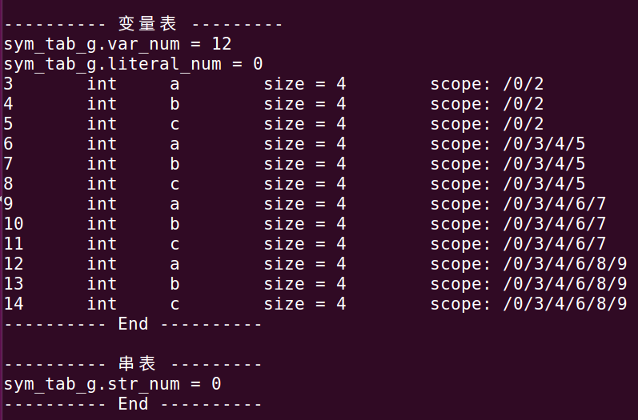
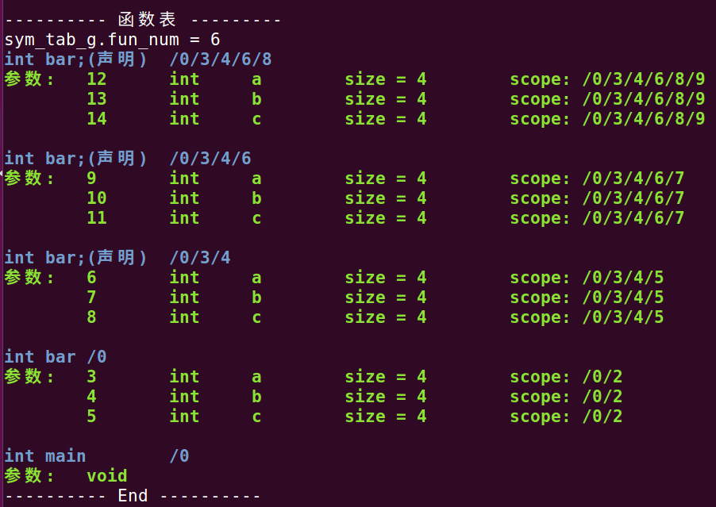
测试 3：
测试符号查找，根据就近原则，是否能找到正确的符号。
首先在 primary_expr 函数中添加下图的代码。
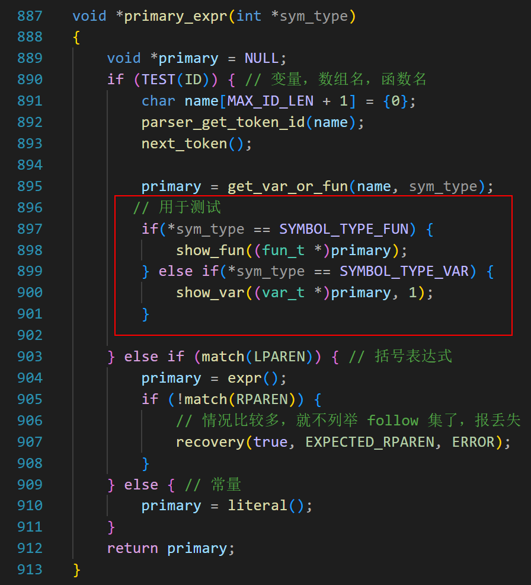
1 | |
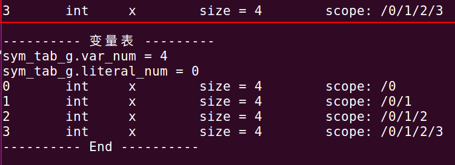
确实找到了第 8 行的 x;
囿于篇幅，就展示到这里吧。欢迎读者下载代码动手实践，捣鼓捣鼓挺好玩的！
下节内容预告：
语义分析还没有讲完，后面该学习中间代码生成了，这个过程还会涉及到语义分析。